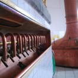

CELIA is made from the exact same ingredients as classic Czech pilsners – and virtually every beer ever brewed: water, malted barley and hops.
CELIA is made from the exact same ingredients as classic Czech pilsners – and virtually every beer ever brewed: water, malted barley and hops
CELIA contains less than 0.5 mg/100 ml ( > 5 PPM ) of gluten creating a beautifully light lager that packs the punch of a world class Czech lager.
CELIA is brewed with 100% locally grown Saaz hops and Moldavian Malt both perfectly suited to grow in the region's rich red soil & beautifully complemented with water from the foothills of Žatec town.

CELIA uses traditional open fermentation making it the only pilsner in the world with the benefit of being gluten-free with all natural carbonation. Forget that bloated beer feeling!

CELIA complements fine food thanks to its unique use of 100% Saaz hops famous for their spicy, clean bitterness combined with a beautiful golden colour & pleasant malty aroma.
Get in touch with us if you are interested in working with GF London, owner of the exclusive distribution rights to CELIA Lager in the UK & Ireland. We are involved in the organisation of unique pop-up dining experiences and many other new and existing events. We love to hear new ideas too.
CELIA is made from the exact same ingredients as classic Czech pilsners – and virtually every beer ever brewed: water, malted barley and hops.
CELIA is made from the exact same ingredients as classic Czech pilsners – and virtually every beer ever brewed: water, malted barley and hops.
CELIA is made from the exact same ingredients as classic Czech pilsners – and virtually every beer ever brewed: water, malted barley and hops.
Nick McNally
Company Director
+44 (0) 7881 522055
nick@celialager.co.uk
linkedin.com/in/nickmcn

Martin Vozar
Company Director
+44 (0) 7818 462279
martin@celialager.co.uk
linkedin.com/in/martinvozar

CELIA is brewed with 100% locally grown Saaz hops and Moldavian Malt both perfectly suited to grow in the region's rich red soil & beautifully complemented with water from the foothills of Žatec town.
Discover more about Deli Divine, how it came about, what it stands for and all those other little bits that you might want to know before you start shopping.
www.DeliDivine.co.uk

Huge drink shop located in Norfolk, England. Over 1500 world beers and over 1000 other drinks. Probably the best selection in the world.
www.BeersOfEurope.co.uk

Gluten-free Shop Ltd. is continually, sourcing New, Tasty and Hard to Find products to Deliver to Your Door, so You can enjoy an ever wider variety of quality, delicious gluten-free foods and beer.
www.Gluten-FreeShop.co.uk